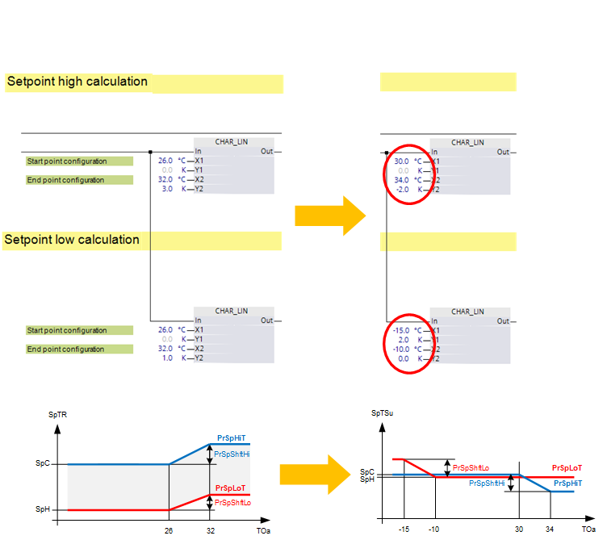

通过排风、送风或室温对嵌套植物进行通风控制
Ahu21x 空气处理装置包含 extract/supply 空气温度串级控制。
该基本解决方案只需进行一些修改即可适应以下应用：
- Room air / supply air temperature cascade control
- Pure supply air temperature control
- Pure room temperature control

以下描述也适用于 Ahu22x 和 Ahu23x。
Room air/supply air temperature cascade control
使用室内空气温度代替排气温度传感器来创建房间/supply 空气温度级联控制。
需要进行以下更改：
Manual adaptation of the program
在“AhuTCtl21”类型的程序块（图表）“TSenSpCtl”中，将与程序块（图表）“TClt”的输入引脚“T”的连接从功能块 R_A“TEx”的当前值“PrVal”移动到功能块 R_A“TR”的当前值“PrVal”。
Room temperature control
在没有送风温度传感器或工厂仅运行单个房间的情况下，可能需要直接控制室温。然而，由于无法验证送风温度，可能会出现送风温度意外过高或过低的情况。
需要进行以下更改：
Configuration
使用“TSenSpCtl”上或“TCtl”上的“TSenSpCtl”内的函数配置器，并将替代项从“TCasCtr21”更改为“TSuCtr21”。
Manual adaptation of the program
在可选程序块“Erc”、“DmpMx”、“Hcl”和“Ccl”中，将室温模拟输入“TR”连接到功能块 R_A 的“TSu”（“TSu”替换为“TR”），并删除电源温度模拟输入（如果不存在）。
在类型“AhuTCtl21”的程序块（图表）“TSenSpCtl”中，将与程序块（图表）“TClt”的输入引脚“TSu”的连接从功能块 R_A“TSu”的当前值“PrVal”移动到功能块 R_A 的当前值“PrVal” “TR”，并将计算值对象的名称从“当前设定点供应温度”更改为“当前设定点室温”。
如果有送风温度传感器，则其限制逻辑可以在“TSenSpCtl”中实现（读取送风温度并改变房间设定值）。
Supply air temperature control
当房间中的加热和冷却需求不是通过通风供应而是以某种其他形式供应时，或者当需要提供具有给定参数的供应温度时，可能需要直接供应空气控制。在某些情况下，通风可以在室外温度较低和较高时支持局部加热/cooling。
需要进行以下更改：
Configuration
在“TSenSpCtl”上或“TCtl”上的“TSenSpCtl”内使用函数配置器，并将替代项从“TCasCtr21”更改为“TSuCtr21”。
Manual adaptation of the program
狭义地定义温度控制的基本设定点 [SpH] 和 [SpC]，例如 20 °C 和 21 °C。
根据室外温度（在可选图表“SsnCmp”中，“季节性温度补偿”选项的一部分）更改送风温度，如下所示：
- Between -10 °C and -15 °C, the supply air temperature increases continuously up to a maximum increase of 2 K. This supports the heating when the outside temperature is low.
- Between 30 °C and 34 °C, the supply air temperature decreases continuously to a maximum setback of 2 K. This supports the cooling when the outside temperature is low.

SpTR = 室温设定值
SpTSu = 送风温度设定值
PrSpShftHi = 季节性温度补偿函数的输出
PrSpShftLo = 季节性温度补偿函数的输出
TOa = 室外温度